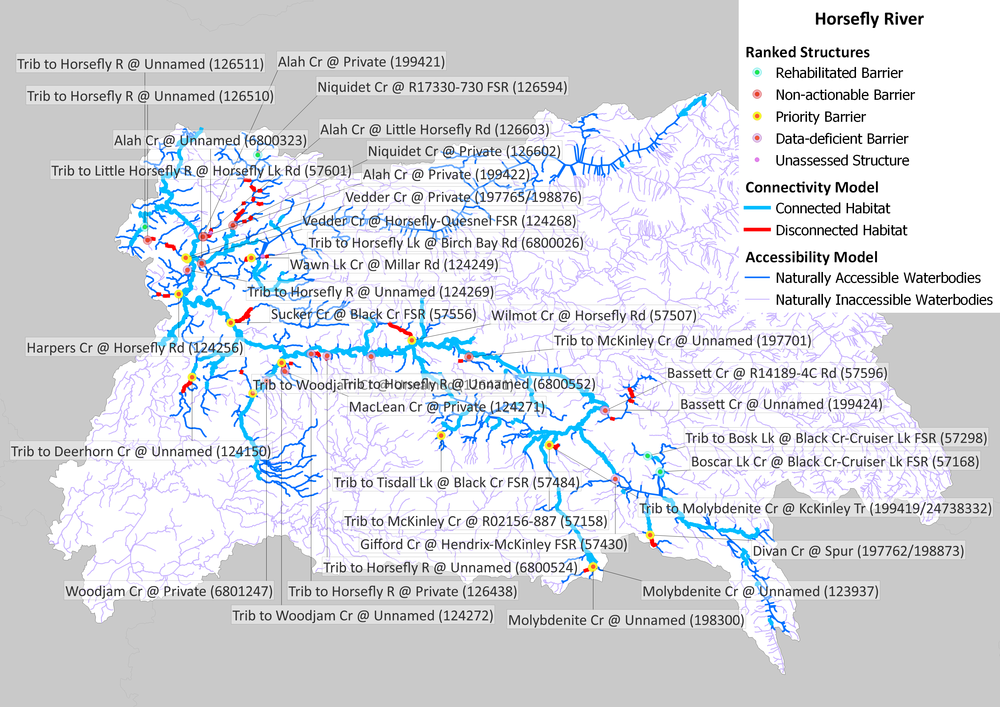
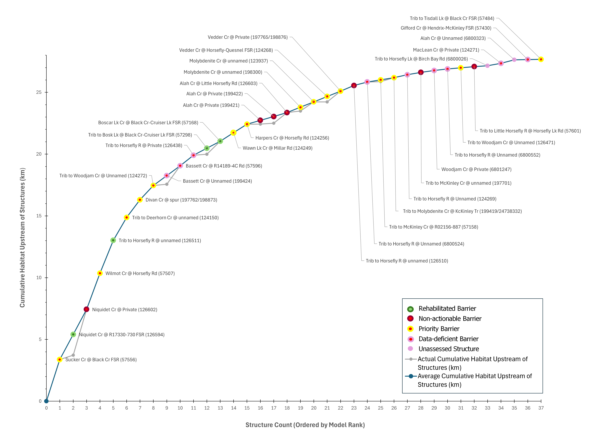

Focal Species | KEA | Indicator | Poor | Fair | Good | Very Good |
|---|---|---|---|---|---|---|
Anadromous Salmon | Available Spawning and Rearing Habitat | % of total linear habitat | <80% | - | 81-90% | >90% |
Current Status: | 91.7% |
Current Connectivity Status
The Planning Team identified two Key Ecological Attributes (KEAs) to assess the current connectivity status of the watershed for each focal species – Accessible Key Habitat and Accessible Overwintering Habitat (Table 6). KEAs are the key aspects of anadromous salmon habitat that are being targeted by this WCRP. For each KEA, an associated indicator was assigned to measure the status of that KEA. The connectivity status indicators were used to establish goals to improve key habitat connectivity over time and is the baseline against which progress is tracked over time.
To support a flexible prioritization framework to identify priority barriers in the watershed, two assumptions are made: 1) any modelled (i.e., the passability status is unknown) or partial barriers are treated as complete barriers to passage and 2) the habitat modelling is binary, it does not assign any habitat quality values. As such, the current connectivity status is refined over time as more data on habitat and barriers are collected.
Comments: Indicator rating definitions are based on the consensus decisions of the Planning Team, including the decision not to define Fair. The current status is based on the connectivity model output, which is current as of May 2026.
Focal Species | KEA | Indicator | Poor | Fair | Good | Very Good |
|---|---|---|---|---|---|---|
Anadromous Salmon | Available Overwintering Habitat | Total Area (m^2) of overwintering habitat connected | ? | ? | ? | ? |
Current Status: |
Comments: No baseline data exists on the extent of overwintering habitat in the watershed. A priority action is included in the Operational Plan (strategy 2.3) to develop a habitat layer, and this will be used to inform this connectivity status assessment in the future.
In the Horsefly River watershed, 259.43 km of Pacific salmon spawning and rearing habitat are currently connected to the ocean and 23.53 km are disconnected from it. This means that 91.7% of the 282.96 km of total habitat is connected.
Goals
Goal # | Goal |
|---|---|
1 | By 2040, the percent (%) of total linear key habitat connected for anadromous salmon will increase from 92% to 96% within the Horsefly River watershed (i.e., reconnect at least 14.77 km of habitat). |
2 | By 2024, the total area of overwintering habitat connected for anadromous salmon will increase by 1,500 m2 within the Horsefly River watershed. |
Structure Count
In the Horsefly River watershed, 33 structures potentially disconnect Pacific salmon spawning or rearing habitat. Of these, 16 are identified as barriers in need of rehabilitation (priority barriers), 7 are identified as barriers that do not warrant rehabilitation (non-actionable), and 11 require further field assessment.
Maps

Habitat Accumulation Curves

Habitat Accumulation Summary Table
Barrier ID | Site Name | Structure Status | Structure Rank | Average Habitat Upastream of Structure (km) | Actual Habitat Upstream of Structure (km) |
|---|---|---|---|---|---|
57556 | Sucker Cr @ Black Cr FSR (57556) | Priority barrier | 1 | 3.38 | 3.38 |
126594 | Niquidet Cr @ R17330-730 FSR (126594) | Rehabilitated barrier | 2 | 2.02 | 0.35 |
126602 | Niquidet Cr @ Private (126602) | Non-actionable barrier | 2 | 2.02 | 3.70 |
57507 | Wilmot Cr @ Horsefly Rd (57507) | Priority barrier | 3 | 2.93 | 2.93 |
126511 | Trib to Horsefly R @ unnamed (126511) | Rehabilitated barrier | 4 | 2.66 | 2.66 |
124150 | Trib to Deerhorn Cr @ unnamed (124150) | Priority barrier | 5 | 1.85 | 1.85 |
197762 | Divan Cr @ spur (197762/198873) | Priority barrier | 6 | 1.44 | 1.44 |
124272 | Trib to Woodjam Cr @ Unnamed (124272) | Priority barrier | 7 | 1.15 | 1.15 |
199424 | Bassett Cr @ Unnamed (199424) | Data-deficient barrier | 8 | 0.80 | 0.10 |
57596 | Bassett Cr @ R14189-4C Rd (57596) | Data-deficient barrier | 8 | 0.80 | 1.50 |
126438 | Trib to Horsefly R @ Private (126438) | Data-deficient barrier | 9 | 0.85 | 0.85 |
57168 | Boscar Lk Cr @ Black Cr-Cruiser Lk FSR (57168) | Rehabilitated barrier | 10 | 0.56 | 1.05 |
57298 | Trib to Bosk Lk @ Black Cr-Cruiser Lk FSR (57298) | Rehabilitated barrier | 10 | 0.56 | 0.08 |
124249 | Wawn Lk Cr @ Millar Rd (124249) | Priority barrier | 11 | 0.70 | 0.70 |
124256 | Harpers Cr @ Horsefly Rd (124256) | Priority barrier | 12 | 0.68 | 0.68 |
126603 | Alah Cr @ Little Horsefly Rd (126603) | Non-actionable barrier | 13 | 0.31 | 0.86 |
199421 | Alah Cr @ Private (199421) | Non-actionable barrier | 13 | 0.31 | 0.01 |
199422 | Alah Cr @ Private (199422) | Non-actionable barrier | 13 | 0.31 | 0.07 |
123937 | Molybdenite Cr @ unnamed (123937) | Priority barrier | 14 | 0.44 | 0.74 |
198300 | Molybdenite Cr @ unnamed (198300) | Priority barrier | 14 | 0.44 | 0.13 |
124268 | Vedder Cr @ Horsefly-Quesnel FSR (124268) | Priority barrier | 15 | 0.44 | 0.00 |
197765 | Vedder Cr @ Private (197765/198876) | Priority barrier | 15 | 0.44 | 0.87 |
126510 | Trib to Horsefly R @ unnamed (126510) | Non-actionable barrier | 16 | 0.45 | 0.45 |
1006800524 | Trib to Horsefly R @ Unnamed (6800524) | Data-deficient barrier | 17 | 0.28 | 0.28 |
199419 | Trib to Molybdenite Cr @ KcKinley Tr (199419/24738332) | Priority barrier | 18 | 0.18 | 0.32 |
57158 | Trib to McKinley Cr @ R02156-887 (57158) | Priority barrier | 18 | 0.18 | 0.04 |
124269 | Trib to Horsefly R @ Unnamed (124269) | Data-deficient barrier | 19 | 0.24 | 0.24 |
197701 | Trib to McKinley Cr @ unnamed (197701) | Non-actionable barrier | 20 | 0.18 | 0.18 |